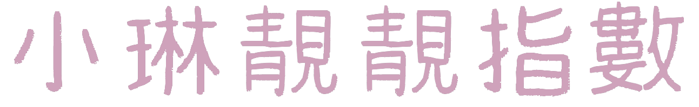

50
60
80
100
1000
99999

9999999...


SCROLL UP
The future can still be changed...
Our story may still continue...
PRESS ME

Scroll to read our story.
#JustTheTwoOfUs
2016JUN
我們的第一張合照，是在我們不知情的情況下被拍下的。那時的我並不知道，在離我這麼近的地方，有一個女生將會成為我生命中一個很重要的人。